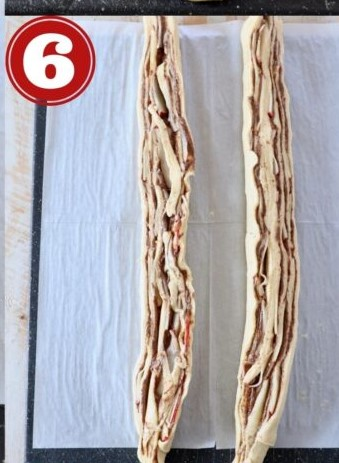

Roll out the crescent roll dough. Place a large piece of parchment paper on a
flat work surface.
Place both sheets of crescent roll dough slightly overlapping on the parchment paper and press the
seams together to form one large crescent roll rectangle.
Top with the cinnamon sugar butter. In a medium bowl,
combine softened butter with granulated sugar, brown sugar and ground cinnamon. Spread this mixture
evenly across the crescent roll dough.
Add the apples. Core and thinly slice one Pazazz apple, then place the slices
on top of the cinnamon sugar butter in an even layer, not overlapping. Overlapping the apples will
make it difficult to roll up and form into the wreath.
Roll it up. Roll the crescent roll dough up tightly over the apples and the
cinnamon sugar butter into a tube.
Slice it in half. Use a sharp knife to slice lengthwise through the middle of
the cinnamon roll tube.

Separate the two halves. Once you’ve sliced the cinnamon roll tube in half,
separate the two halves, and make sure the cinnamon butter and apples are facing up on both halves.
Braid them together. Carefully braid the two halves together, lifting one
half over the other,
then vice versa until it’s rolled up into one long braid.
Form the wreath. Bring the two ends of the braid together to form the
wreath, then transfer the
wreath on the parchment paper over to a baking sheet. Bake at 350°F for 20-25 minutes, or until the
entire cinnamon roll wreath is golden brown.